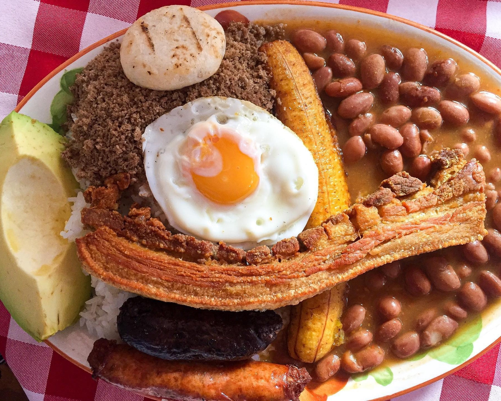

Hay diferentes versiones del origen de esta receta típica. Una de estas es que surgió como derivado del envuelto arriero, que en el siglo XIX era un plato rico en carbohidratos ideal para que los arrieros tuvieran la energía necesaria para su trabajo diario.
Otra de las historias dice que en los años 60 a un señor de Caldas que vivía en Bogotá y tenía un restaurante le pidieron preparar un buffet con comida de su región, él ofreció frijoles y una amplia variedad de proteína animal para que los comensales se sirvieran a su gusto; pero las personas elegían más de una y en cantidades abundantes, al ver esto se le ocurrió ofrecer este menú en su carta y servirlo en una bandeja para tener una mejor presentación. Y así fue como se hizo famosa esta receta.
Sin importar el origen, lo cierto es que esta lleva años siendo uno de los platos insignia del país y reconocida alrededor del mundo.
